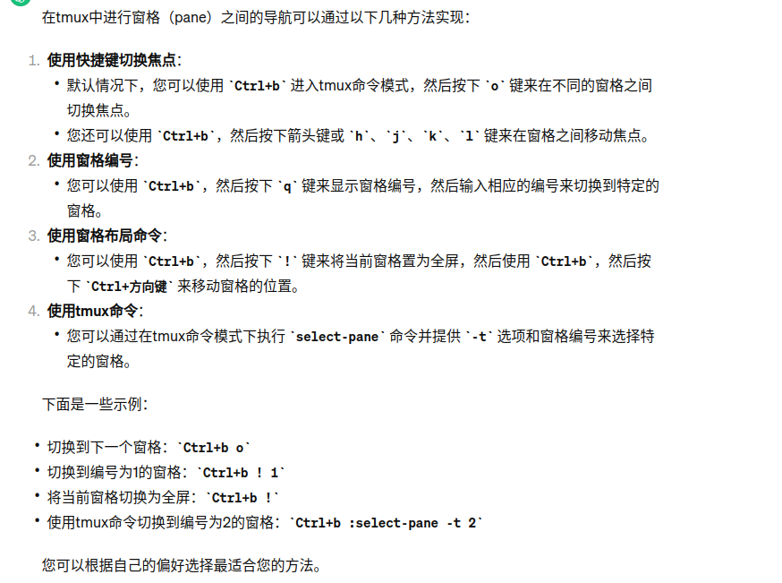
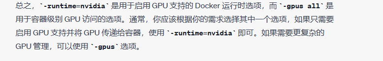
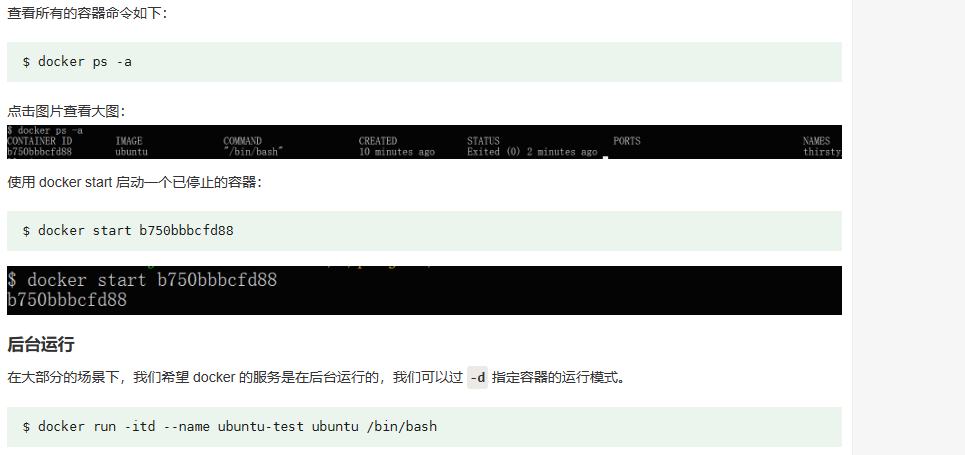
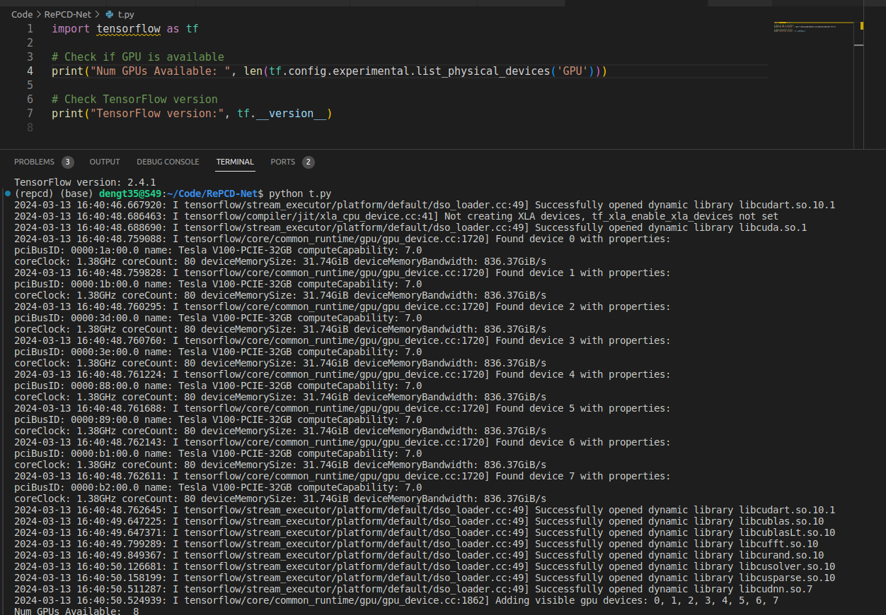

linux相关的操作
# linux 快捷键
Restart
- Go to tty , (ctal + alt + [2-4]) and login
sudo pkilll Xorg && sudo restart lightdm
If useless
!!! Don't restart ..q fdsf
Pressing 'ctrl '+ 'alt'
Press 'Prtsc' (which is the screen shot)
Press 'R', then 'E', 'I', 'S' 'U' 'B'
查找大文件
find ~ -type f -exec du -h {} + | sort -rh | head -n 10
从gui打开当前目录
xdg-open ./
tmux 的使用，因为server无screen
tmux list-sessions
tmux attach -t session_name_or_number
# 退出当前 tmux 会话时，可以输入 exit 命令或按下 Ctrl-d 键。
# restart desktop server
sudo systemctl restart gdm
sudo systemctl restart lightdm
# https://linuxconfig.org/how-to-restart-gui-on-ubuntu-22-04-jammy-jellyfish
2
3
4
5
6
7
8
# tools
# Tmux
tmux new：创建一个新会话。
tmux new -s mysession：创建一个名为“mysession”的新会话。
tmux kill-session -t mysession：关闭名为“mysession”的会话。
tmux ls：列出所有会话。
tmux attach -t mysession：附加到名为“mysession”的会话
2
3
4
5
tmux 是一个终端多路复用器，它允许你在一个终端窗口中创建多个分割窗格，每个窗格可以运行不同的命令或应用程序。这使得你可以同时管理多个终端会话，非常有用，特别是在远程服务器上工作时。以下是一些 tmux 的基本使用方法：
启动 tmux： 在终端中输入 tmux 命令，然后按 Enter 键来启动 tmux 会话。你会看到一个新的终端窗格打开，其中包含一个命令行提示符。
tmux 基本命令：
创建一个新窗格：Ctrl-b %（按住 Ctrl 键和 b 键，然后松开，再按百分号键 %）
切换窗格方向：Ctrl-b 箭头键（左、右、上、下）
关闭当前窗格：Ctrl-b x
切换窗格：Ctrl-b o（按住 Ctrl 键和 b 键，然后松开，再按小写字母 o 键）
- 新建窗口：
- 在 tmux 中，你可以创建多个窗口，每个窗口包含一个或多个分割窗格。要创建一个新窗口，按住 Ctrl-b c（按住 Ctrl 键和 b 键，然后松开，再按 c 键）。
- 分割窗格：
- tmux 允许你在窗格中创建水平或垂直分割。要在当前窗格中创建一个新的水平分割窗格，使用 Ctrl-b " 命令。要创建一个新的垂直分割窗格，使用 Ctrl-b % 命令。
- 切换窗口：
切换到下一个窗口：Ctrl-b n
切换到上一个窗口：Ctrl-b p
切换到指定窗口编号：Ctrl-b 0 到 Ctrl-b 9
- 退出 tmux：
- 退出当前 tmux 会话时，可以输入 exit 命令或按下 Ctrl-d 键。
- 分离和重新附加会话：
- 你可以分离 tmux 会话，使其在后台运行。按下 Ctrl-b d 可以分离当前会话。要重新附加到会话，可以运行 tmux attach-session 命令，后跟会话的名称或编号。

- Press "ctrl+b" exit the mode ("read mode")
这些是 tmux 的一些基本用法。tmux 还具有更多高级功能，如会话管理、自定义配置、窗口布局等。你可以查看 tmux 的官方文档或使用 man tmux 命令来获取更多详细信息。
# 忘记使用tmux,bg后台
# ctrl + z
[1]+ Stopped /root/bin/rsync.sh
然后我们可以把程序调度到后台执行：（bg 后面的数字为作业号）
#bg 1
[1]+ /root/bin/rsync.sh &
用 jobs 命令查看正在运行的任务：
#jobs
[1]+ Running /root/bin/rsync.sh &
如果想把它调回到前台运行， 可以用
#fg 1
/root/bin/rsync.sh
2
3
4
5
6
7
8
9
10
11
[ctrl]+z 将前台任务丢到后台中暂停
jobs 查看后台的工作状态
fg %jobnumber 将后台的任务拿到前台来处理
bg %jobnumber 将任务放到后台中去处理
kill 管理后台的任务
https://www.ohyee.cc/post/note_install_git_without_root书签：非Root用户安装git|OhYee 博客 (opens new window)
# Docker
docker run -v /home/tao:/data --gpus all --name=ubuntu20.04-CUDA --network host -it nvidia/cuda:11.4.3-devel-ubuntu20.04

docker run -v /data/dengtao/Desktop:/data -v /data/dengtao/docker/apt-cache:/var/cache/apt/archives -v /tmp/.X11-unix:/tmp/.X11-unix -e DISPLAY=$DISPLAY --gpus all --name=ubuntu20.04-CUDA --network host -it nvidia/cuda:11.4.3-devel-ubuntu20.04
apt update && apt install libpcl-dev -y
2
# docker start -i ubun...直接tab
本机
docker run --runtime=nvidia -v /home/tao/Desktop:/data --name=ubuntu20.04-torch --network host -e DISPLAY=$DISPLAY -v /tmp/.X11-unix:/tmp/.X11-unix -it pytorch/pytorch:1.12.1-cuda11.3-cudnn8-devel
apt update && apt install libpcl-dev -y
docker run --gpus all -v /home/tao/Desktop:/data --name=ubuntu20.04-torch --network host -it pytorch/pytorch:1.12.1-cuda11.3-cudnn8-devel
2
3
成功完成docker gpu配置，gxhost + can resolve it =⇒ THE GUI problem
总结一下：
配置 NVIDIA Docker 运行时runtime
确保你已正确安装 NVIDIA 驱动程序。你可以使用
nvidia-smi命令来验证 NVIDIA 驱动程序是否正常安装和可用。安装 NVIDIA Container Toolkit，这是与 Docker 集成 NVIDIA GPU 运行时的一种方式。可以按照 NVIDIA Container Toolkit 的官方文档进行安装和配置：https://github.com/NVIDIA/nvidia-docker (opens new window)
- 直接到官方文档里配置就好，很轻松。注意只需要配置docker的那个
之后考虑后台任务

2023年10月6日21:10:41
docker 启动 done
数据挂载 done
apt install libpcl-dev6
docker exec -it container_id /bin/bash
# Refernce
# Dafny
Install the binary file, not buiding from source code
Just download from github/release
https://dafny.org/dafny/Installation
一个别人的tutorial 教程
https://im.qq.com/linuxqq/index.shtml
Just download the deb version, then
sudo dpkg -i linuxqq...
# Wechat install
ubuntu 22
option:
wine hq or 优麒麟
~~Wine bad !!! ~~
~~优麒麟 good ~~
直接用官方的. 2024.3.21
# fcitx5: Input method
You can also ask newbing.
https://zhuanlan.zhihu.com/p/508797663
# Shell
Make multiple related folders.
#!/bin/bash
# 定义文件夹的前缀
prefix="pcd_seg"
# 循环创建文件夹
for i in {1..3}; do
# 使用mkdir创建文件夹
mkdir "${prefix}${i}"
done
2
3
4
5
6
7
8
9
10
11
watch -n1 nvidia-smi
# dynamic check the gpu memory
2
# Vscode
ctrk+(k, 0-zero)
行首（光标移动到当前行的开头）：
Windows / Linux:
Home键macOS:
Command + 左箭头
行末（光标移动到当前行的末尾）：
Windows / Linux:
End键macOS:
Command + 右箭头
这些快捷键可以帮助你快速定位到行首和行末，以提高代码编辑效率。如果你想要选定文本从行首到行末，你可以使用 Shift 键加上上述快捷键。例如，Shift + Home 会选择从光标位置到行首的文本，而 Shift + End 会选择从光标位置到行末的文本。
折叠所有代码块：
Ctrl + K, 0或Ctrl + K, Ctrl + 0展开所有代码块：
Ctrl + K, J或Ctrl + K, Ctrl + J折叠当前代码块：
Ctrl + Shift + [或Ctrl + ]展开当前代码块：
Ctrl + Shift + ]或Ctrl + [
# Git
git submodule init
git submodule add /path/to/sub_module1
# or git submodule add https://github.com/example/sub_project
#git submodule add /path/to/sub_module2
git submodule update
2
3
4
5
# Tensorflow
conda install tensorflow-gpu
# if occur numpy problem, install numpy=1.19.5 version
2
3
4
5
6
Check instal
import tensorflow as tf
# Check if GPU is available
print("Num GPUs Available: ", len(tf.confi g.experimental.list_physical_devices('GPU')))
# Check TensorFlow version
print("TensorFlow version:", tf.__version__)
2
3
4
5
6
7
8
https://numpy.org/devdocs/release/1.20.0-notes.html numpy 1.20.0 deprecate the np."type" => "type"
